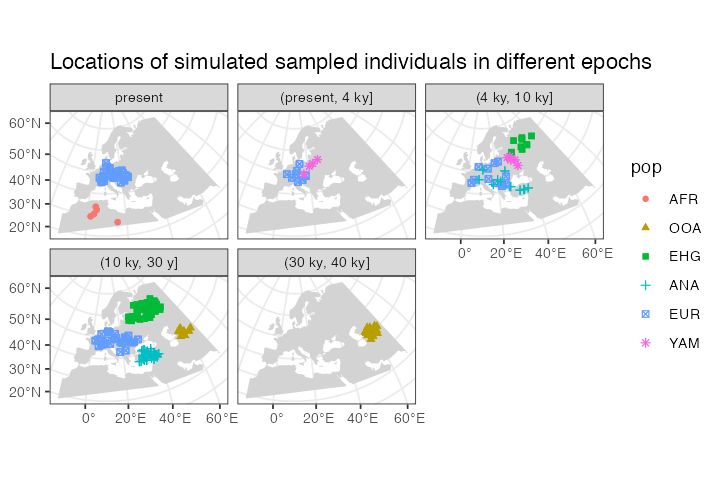
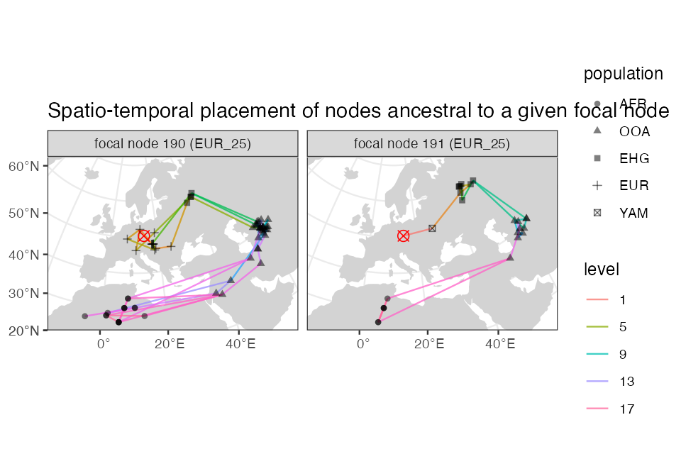

Spatially annotated tree sequences
Source:vignettes/vignette-06-locations.Rmd
vignette-06-locations.RmdIntroduction
The main selling point of the slendr R package is programming complex spatially explicit population genetic models. Because we use SLiM as the simulation engine, we can store simulated data efficiently in a tree sequence format which allows us to run large population-scale simulations. In the previous vignettes, we described how you can specify spatial population dynamics and how you can access tree sequence data and calculate population genetic statistics on it (focusing on non-spatial models for simplicity). Now it’s time to show you how to work with simulated tree sequence in a spatial context.
Model specification
Let’s first load all required R libraries:
Let’s also set up the Python slendr environment which we will use to analyse tree sequence data:
# activate slendr's Python interface, installing all dependencies if necessary
setup_env()#> The slendr interface to required Python modules has been successfully activated.
# check that we have the correct environment
check_env()#> Summary of the currently active Python environment:
#>
#> Python binary: /Users/martin_petr/Library/r-miniconda/envs/automatic_slendr_python_env/bin/python
#> Python version: 3.8.12 | packaged by conda-forge | (default, Jan 30 2022, 23:36:06) [Clang 11.1.0 ]
#>
#> slendr requirements:
#> - tskit: version 0.4.1 ✓
#> - msprime: version 1.1.0 ✓
#> - pyslim: version 0.700 ✓We begin by specifying our spatial model. We will use the same demographic model of modern human history in West Eurasia, which we extensively discussed in the introductory tutorial and on the main landing page. Here is a complete model definition script, without further comments:
# simulated world map
map <- world(
xrange = c(-15, 60),
yrange = c(20, 65),
crs = "EPSG:3035"
)
# couple of broad geographic regions
africa <- region("Africa", map, polygon = list(c(-18, 20), c(40, 20), c(30, 33),
c(20, 32), c(10, 35), c(-8, 35)))
europe <- region("Europe", map, polygon = list(c(-8, 35), c(-5, 36), c(10, 38),
c(20, 35), c(25, 35), c(33, 45),
c(20, 58), c(-5, 60), c(-15, 50)))
anatolia <- region("Anatolia", map, polygon = list(c(28, 35), c(40, 35), c(42, 40),
c(30, 43), c(27, 40), c(25, 38)))
# define population histories
# African ancestral population
afr <- population(
"AFR", parent = "ancestor", time = 52000, N = 3000,
map = map, polygon = africa
)
# population of the first migrants out of Africa
ooa <- population(
"OOA", parent = afr, time = 51000, N = 500, remove = 25000,
center = c(33, 30), radius = 400e3
) %>%
move(
trajectory = list(c(40, 30), c(50, 30), c(60, 40)),
start = 50000, end = 40000, snapshots = 20
)
# Eastern hunter-gatherers
ehg <- population(
"EHG", parent = ooa, time = 28000, N = 1000, remove = 6000,
polygon = list(
c(26, 55), c(38, 53), c(48, 53), c(60, 53),
c(60, 60), c(48, 63), c(38, 63), c(26, 60))
)
# European population
eur <- population(name = "EUR", parent = ehg, time = 25000, N = 2000, polygon = europe)
# Anatolian farmers
ana <- population(
name = "ANA", time = 28000, N = 3000, parent = ooa, remove = 4000,
center = c(34, 38), radius = 500e3, polygon = anatolia
) %>%
expand(
by = 2500e3, start = 10000, end = 7000,
polygon = join(europe, anatolia), snapshots = 20
) # expand the range by 2.500 km
# Yamnaya steppe population
yam <- population(
name = "YAM", time = 7000, N = 500, parent = ehg, remove = 2500,
polygon = list(c(26, 50), c(38, 49), c(48, 50),
c(48, 56), c(38, 59), c(26, 56))
) %>%
move(trajectory = list(c(15, 50)), start = 5000, end = 3000, snapshots = 10)
# geneflow events
gf <- list(
geneflow(from = ana, to = yam, rate = 0.5, start = 6000, end = 4000, overlap = FALSE),
geneflow(from = ana, to = eur, rate = 0.5, start = 8000, end = 6000),
geneflow(from = yam, to = eur, rate = 0.75, start = 4000, end = 3000)
)
# compile the spatial model
model <- compile(
populations = list(afr, ooa, ehg, eur, ana, yam),
geneflow = gf,
generation_time = 30, resolution = 10e3,
competition_dist = 130e3, mate_dist = 100e3, dispersal_dist = 70e3,
path = file.path(tempdir(), "spatial-ts"), overwrite = TRUE
)(As a sanity check that we defined the demography correctly, you can plot a graph summarizing population divergences and geneflow events by calling plot_graph(model)).
And for completeness, here is a (slightly busy) overview of the spatial population ranges that we defined above:
plot(afr, ooa, ehg, eur, ana, yam)
Scheduling sampling events and simulation
Now we will schedule the sampling of a single individual from each population every two thousand years, starting from 40 thousand years ago all the way to the present (this is a feature discussed in the basic tree sequence overview):
# one ancient individual every two thousand years
ancient <- sampling(model,
times = seq(40000, 1, by = -1000),
list(ooa, 1), list(ehg, 1), list(eur, 1),
list(ana, 1), list(yam, 1))
# present-day Africans and Europeans
present <- sampling(model, times = 0, list(afr, 5), list(eur, 30))
samples <- rbind(ancient, present)
slim(
model, sequence_length = 100e3, recombination_rate = 1e-8, burnin = 200e3,
sampling = samples, method = "batch", random_seed = 314159, max_attempts = 1
)After the simulation is done, we can load the data in the same way we did in our first exploration of tree sequence features in slendr. We will also immediately simplify the tree sequence data structure to only those genealogies which involve individuals that we explicitly scheduled for sampling, and perform recapitation to ensure the coalescence of all genealogies along the genome:
ts <- ts_load(model, recapitate = TRUE, simplify = TRUE, recombination_rate = 1e-8, Ne = 10000, random_seed = seed)Extracting spatial tree sequence infrmation
As we showed in the basic tutorial, the most important function for data exploration is ts_data(). This function extracts all information about individuals and nodes recorded in a tree sequence object loaded and annotated by slendr :
data <- ts_data(ts)For completeness, we have also functions such as ts_individuals(), ts_nodes() and ts_edges() which extract tree sequence tables in their “raw” unprocessed form, but ts_data() is much more convenient for data exploration and analyses. First, it combined information in the low-level tables of individuals and nodes into a single table but more importantly, if the model which generated this data was a spatial model, ts_data() automatically annotates the node/individual tables with the position of each node in space (in real projected coordinates) and time. This means that we can do spatial data analysis directly on the table returned by ts_data().
Even better, although we can see below that the returned object belongs to slendr’s own class slendr_ts_data, it is internally stored as a spatial sf object. This means that we can use all the functionality of the powerful R package sf as well as many other packages for geospatial analyses directly on the data:
class(data)#> [1] "slendr" "slendr_tsdata" "sf" "tbl_df"
#> [5] "tbl" "data.frame"Typing the object into the R console presents a user-friendly summary of the spatio-temporal data extracted from the tree sequence:
data#> slendr 'tsdata' object
#> ----------------------
#> tree sequence saved by the SLiM backend from a backward time model
#>
#> summary of the contents:
#> AFR - 5 sampled, 19 retained individuals
#> OOA - 16 sampled, 89 retained individuals
#> EHG - 22 sampled, 61 retained individuals
#> ANA - 24 sampled, 32 retained individuals
#> EUR - 54 sampled, 84 retained individuals
#> YAM - 4 sampled, 11 retained individuals
#>
#> total: 125 sampled, 296 retained individuals and
#> no nodes from an unassigned individual
#> ----------------------
#> oldest sampled individual: 40000 time units 'before present'
#> youngest sampled individual: 0 time units 'before present'
#>
#> oldest node: 2702915 time units 'before present'
#> youngest node: 0 time units 'before present'
#> ----------------------
#> overview of the underlying sf object:
#>
#> # A tibble: 573 × 10
#> name pop ind_id node_id time location remembered
#> <chr> <chr> <dbl> <int> <dbl> <POINT [m]> <lgl>
#> 1 OOA_1 OOA 56 0 40000 (8559748 3193326) TRUE
#> 2 OOA_1 OOA 56 1 40000 (8559748 3193326) TRUE
#> 3 OOA_2 OOA 58 2 39000 (8388098 3151908) TRUE
#> 4 OOA_2 OOA 58 3 39000 (8388098 3151908) TRUE
#> 5 OOA_3 OOA 63 4 38000 (8275635 3180032) TRUE
#> 6 OOA_3 OOA 63 5 38000 (8275635 3180032) TRUE
#> 7 OOA_4 OOA 67 6 37000 (8278986 3586068) TRUE
#> 8 OOA_4 OOA 67 7 37000 (8278986 3586068) TRUE
#> 9 OOA_5 OOA 69 8 36000 (8381127 3051721) TRUE
#> 10 OOA_5 OOA 69 9 36000 (8381127 3051721) TRUE
#> # … with 563 more rows, and 3 more variables: retained <lgl>, alive <lgl>,
#> # pedigree_id <int>
#>
#> Note: NA values belong to unsampled individuals
#> ----------------------
#> map: internal coordinate reference system EPSG 3035
#> spatial limits (in degrees longitude and latitude):
#> - vertical -15 ... 60
#> - horizontal 20 ... 65In the first part of the summary, we see how many individuals (sampled or retained) and nodes are present in the tree sequence together with additional useful information, including a section of the internally stored sf object. And this is a crucial point—we can always access the internal sf object with the spatial data by running the following, which avoid the verbose summary above and exposes the underlying sf data frame directly:
data[]#> Simple feature collection with 573 features and 9 fields (with 27 geometries empty)
#> Geometry type: POINT
#> Dimension: XY
#> Bounding box: xmin: 2234450 ymin: 368874.9 xmax: 8559748 ymax: 4814330
#> Projected CRS: ETRS89-extended / LAEA Europe
#> slendr 'tsdata' object
#> ----------------------
#> tree sequence saved by the SLiM backend from a backward time model
#>
#> summary of the contents:
#> AFR - 5 sampled, 19 retained individuals
#> OOA - 16 sampled, 89 retained individuals
#> EHG - 22 sampled, 61 retained individuals
#> ANA - 24 sampled, 32 retained individuals
#> EUR - 54 sampled, 84 retained individuals
#> YAM - 4 sampled, 11 retained individuals
#>
#> total: 125 sampled, 296 retained individuals and
#> no nodes from an unassigned individual
#> ----------------------
#> oldest sampled individual: 40000 time units 'before present'
#> youngest sampled individual: 0 time units 'before present'
#>
#> oldest node: 2702915 time units 'before present'
#> youngest node: 0 time units 'before present'
#> ----------------------
#> overview of the underlying sf object:
#>
#> # A tibble: 573 × 10
#> name pop ind_id node_id time location remembered
#> <chr> <chr> <dbl> <int> <dbl> <POINT [m]> <lgl>
#> 1 OOA_1 OOA 56 0 40000 (8559748 3193326) TRUE
#> 2 OOA_1 OOA 56 1 40000 (8559748 3193326) TRUE
#> 3 OOA_2 OOA 58 2 39000 (8388098 3151908) TRUE
#> 4 OOA_2 OOA 58 3 39000 (8388098 3151908) TRUE
#> 5 OOA_3 OOA 63 4 38000 (8275635 3180032) TRUE
#> 6 OOA_3 OOA 63 5 38000 (8275635 3180032) TRUE
#> 7 OOA_4 OOA 67 6 37000 (8278986 3586068) TRUE
#> 8 OOA_4 OOA 67 7 37000 (8278986 3586068) TRUE
#> 9 OOA_5 OOA 69 8 36000 (8381127 3051721) TRUE
#> 10 OOA_5 OOA 69 9 36000 (8381127 3051721) TRUE
#> # … with 563 more rows, and 3 more variables: retained <lgl>, alive <lgl>,
#> # pedigree_id <int>
#>
#> Note: NA values belong to unsampled individuals
#> ----------------------
#> map: internal coordinate reference system EPSG 3035
#> spatial limits (in degrees longitude and latitude):
#> - vertical -15 ... 60
#> - horizontal 20 ... 65Because the data returned by ts_data() is internally transformed to the projected CRS used by the model, we can use the returned object as any other data of the class sf. For instance, at the beginning of this vignette, we specified the world map of the model to be represented in projected CRS (EPSG 3035) which we can verify by typing:
map#> slendr 'map' object
#> -------------------
#> map: internal coordinate reference system EPSG 3035
#> spatial limits (in degrees longitude and latitude):
#> - vertical -15 ... 60
#> - horizontal 20 ... 65The fact that the ts_data() result is just another sf object makes it easy to visualize overlay contents on this map, as we will see below.
Using the simple features interface
It’s hard to overstate how powerful the R ecosystem around the sf package is. However, getting familiar with this package and geospatial analysis in general can be a bit of a hurdle, especially for novice users because it takes time to get familiar with many new concepts.
Although many slendr features for encoding and programming spatial models and handling simulated tree sequence data discussed so far are designed to abstract away most of the complexities of the underlying low-level details to let you focus on the problem at hand, spatial data analysis is unfortunately whole another matter. Luckily, because the data generated by slendr is no different from any other source of spatial data out there and you have great free resources at your disposal.
The bottom line is: the spatio-temporal data extracted from tree sequences by slendr is no different than an any other normal sf object. Any resource that you find for manipulating, plotting, and analysing sf data can be applied to slendr results as well.
In the remainder of this vignette we will look at a couple of examples.
Plotting locations of simulated sampled individuals
Every spatial object in slendr is internally of the class sf. The flexibility of of ggplot2 and sf packages means that we can overlay the locations of sampled individuals (saved in a sf format by ts_data()) on top of our world map (also an sf object):
sampled_data <- ts_data(ts, remembered = TRUE)
ggplot() +
geom_sf(data = map, fill = "lightgray", color = NA) +
geom_sf(data = sampled_data, aes(shape = pop, color = time)) +
ggtitle("Locations of simulated sampled individuals") +
scale_color_continuous(type = "viridis") +
theme_bw()
Because sf simple features objects (and, by extension, even slendr_spatial objects) are internally stored as normal data frames with couple more bells and whistles on top of them, we have all the powerful tools for manipulating tabular data at our disposal.
As an example, let’s say we wanted to split the sampled individuals in the tree sequence into epochs and plot those individually using standard ggplot2 features. We could simply first do this, adding a new column specifying to which epoch does each simulated individual belong:
epochs <- sampled_data %>%
mutate(epoch = cut(time, breaks = c(40000, 30000, 10000, 4000, 0)),
epoch = ifelse(is.na(epoch), 0, epoch),
epoch = factor(epoch, labels = c("present", "(present, 4 ky]", "(4 ky, 10 ky]",
"(10 ky, 30 y]", "(30 ky, 40 ky]")))This chunk of code simply adds a new column epoch to the sf spatial data frame object called epochs here.
Then we can use the ggplot2 function geom_sf to plot the locations of sampled individuals on the map, with each facet corresponding to one epoch (the warning can be safely ignored):
ggplot() +
geom_sf(data = map, fill = "lightgray", color = NA) +
geom_sf(data = epochs, aes(shape = pop, color = pop)) +
facet_wrap(~ epoch) +
ggtitle("Locations of simulated sampled individuals in different epochs") +
theme_bw()
We hope this little excursion to handling slendr spatial objects (and, by extension, sf objects) with standard data frame manipulation functions and ggplot2 visualisation convinced you that you have a great flexibility in analysing spatial slendr data. For best introduction into so-called “tidy” data analysis, we encourage you to read the freely-available book R for Data Science.
Extracting spatio-temporal ancestral relationships
Perhaps even more useful than plotting the locations of simulated individuals is accessing the locations (and times) of all ancestors of a particular tree sequence node (a “focal node”). Starting from the focal node or individual, we can trace the geographical location of nodes in its lineage going back all the way to the root with the function ts_ancestors().
Because we record the time and the location of every individual that happens to be the ancestor of at least one sampled individual, this means that we know the true location of every node of the tree sequence.
The simplest use case is determining the locations and times of every single node in the genealogical history of an individual along the tree sequence (it is possible to recover ancestral relationships for multiple samples at once too):
ind <- "EUR_25"
lineages <- ts_ancestors(ts, ind, verbose = TRUE)#> Collecting ancestors of EUR_25 [1/1]...#>
#> Generating data about spatial relationships of nodes...The function starts at a given node (or, if a name of a sampled diploid individual is provided, two nodes), extracts information about all the parent nodes of that node in the entire tree sequence, records their locations and times, then proceeds one level “higher” in the genealogical history to gather information about the parents of those parent nodes, etc., until it reaches a root node. The result of this process is another sf object in which each row of the table encodes information about single branch in the genealogy of the “focal” node or individual (in our example, "EUR_25"):
lineages#> Simple feature collection with 90 features and 12 fields
#> Active geometry column: connection
#> Geometry type: LINESTRING
#> Dimension: XY
#> Bounding box: xmin: 2802639 ymin: 368874.9 xmax: 8456543 ymax: 4741097
#> Projected CRS: ETRS89-extended / LAEA Europe
#> # A tibble: 90 × 15
#> name pop node_id level child_id child_time parent_id parent_time child_pop
#> * <chr> <fct> <int> <fct> <int> <dbl> <int> <dbl> <fct>
#> 1 EUR_… EUR 190 1 190 0 266 1140 EUR
#> 2 EUR_… EUR 190 2 266 1140 298 4470 EUR
#> 3 EUR_… EUR 190 2 266 1140 371 18660 EUR
#> 4 EUR_… EUR 190 3 298 4470 306 5820 EUR
#> 5 EUR_… EUR 190 3 298 4470 332 11760 EUR
#> 6 EUR_… EUR 190 3 371 18660 430 26040 EUR
#> 7 EUR_… EUR 190 4 306 5820 334 12780 EUR
#> 8 EUR_… EUR 190 4 332 11760 395 22290 EUR
#> 9 EUR_… EUR 190 4 430 26040 443 27810 EHG
#> 10 EUR_… EUR 190 5 334 12780 336 13080 EUR
#> # … with 80 more rows, and 6 more variables: parent_pop <fct>,
#> # child_location <POINT [m]>, parent_location <POINT [m]>,
#> # connection <LINESTRING [m]>, left_pos <dbl>, right_pos <dbl>In each row of the table, two columns location and parent_location carry the spatial location of a node (node_id) and its parent node (parent_id), respectively, same with the columns time and parent_time (times of nodes) and pop and parent_pop (populations to which the nodes belong). The column connection contains an sf geometry object of the line connecting the two nodes in the coordinate reference system of the “model world”. The column focal_id tells us to which focal node’s genealogy the rows of the table belong to, and the level column shows how deep in the genealogical past does each branch (i.e. row of the table) belong to.
This table contains a complete information about spatio-temporal relationships between the nodes in the genealogy of the given focal sample. In the spirit of demonstrating of slendr tree sequence tables interact with the sf and ggplot2 environments, let’s look at the most immediate parent nodes of the two nodes in the sampled individual (i.e. nodes at the level 1) using the filter function from the R package dplyr:
filter(lineages, level == 1)#> Simple feature collection with 2 features and 12 fields
#> Active geometry column: connection
#> Geometry type: LINESTRING
#> Dimension: XY
#> Bounding box: xmin: 4623438 ymin: 2643195 xmax: 5514323 ymax: 3263463
#> Projected CRS: ETRS89-extended / LAEA Europe
#> # A tibble: 2 × 15
#> name pop node_id level child_id child_time parent_id parent_time child_pop
#> * <chr> <fct> <int> <fct> <int> <dbl> <int> <dbl> <fct>
#> 1 EUR_25 EUR 190 1 190 0 266 1140 EUR
#> 2 EUR_25 EUR 191 1 191 0 296 4080 EUR
#> # … with 6 more variables: parent_pop <fct>, child_location <POINT [m]>,
#> # parent_location <POINT [m]>, connection <LINESTRING [m]>, left_pos <dbl>,
#> # right_pos <dbl>As we mentioned above, there are three columns encoding spatial information: location and parent_location carry information about the location of the child and parent node (POINT class), and the connection object (LINESTRING class) contains the line connecting the two nodes (both a branch in the tree sequence and also the spatial connection). We can plot all three spatial features (two points and a line) individually on a map:
level1_branches <- ts_ancestors(ts, "EUR_10") %>% filter(level == 1)
ggplot() +
geom_sf(data = map, fill = "lightgray", color = NA) +
geom_sf(data = level1_branches[, ]$child_location, shape = 13, size = 3, color = "red") +
geom_sf(data = level1_branches[, ]$parent_location, shape = 20, color = level1_branches[, ]$node_id) +
geom_sf(data = level1_branches[, ]$connection, linetype = 3) +
theme_bw() +
ggtitle("Parent nodes (blue) of a focal individual (red)")
In the figure above we can see the red focal node and its immediate parents in the tree sequence genealogy (in the coalescent sense, not immediate parents of that individual!).
A more convenient way to do this analysis is a companion function to ts_ancestors() called plot_ancestors(). This function accepts an sf object with the spatial branching data created by ts_ancestors() and plots the paths between nodes on a map leading from a focal node up to the root(s) of the tree sequence (instead of just paths to immediate parents shown in the previous figure). In this case, because we are working with a single diploid individual, we get two sets of paths for each of its nodes (chromosomes) and plot them in two facets:
plot_ancestors(lineages, ind)
You can compare this result to the animation which recapitulates the simulation, presented in the first vignette.
After comparing our spatial tree sequence figure with the animation, we can immediately notice several things:
All spatial tree sequence paths trace the ancestry of our single European individual back to Africa. In fact, we also see a cluster of past ancestral nodes (i.e. concentrated coalescent events) in the place where the Out of Africa (OOA) migrant population settled around 40,000 thousand years ago (yellow population in the the animation).
The first chromosome traces its ancestry to the Yamnaya population indicated by a star. This is expected because we programmed Yamnaya to contribute significant part of ancestry to present-day Europeans (compare to the demographic graph on top of this vignette). In turn, the Yamnaya node traces its ancestry to EHG (which is its parental population). We can see a cluster of EHG nodes in one location because we did not specify any spatial dynamic for this population in our model
We also see that the other chromosome traces of its ancestry to the Anatolia (triangles). This makes sense, because we have simulated European ancestry as being part Anatolian.
By default, branches are colored by the time of coalescence. We can also plot the number of coalescent events separating a focal node (red crossed circle) and one of its ancestors by specifying color = "level" (where level 1 represents branches leading to all of the focal node’s parents):
plot_ancestors(lineages, ind, color = "level")
Let’s look at the spatial ancestry of another sample. For instance, we know that the simulated history of the Anatolian population in our model is much simpler. According to the demographic graph above, Anatolians split from the ancestral population of Eurasians in Anatolia and then expanded in a wave to Europe. We have sampled the following individuals:
ts_samples(ts) %>% filter(pop == "ANA")#> # A tibble: 24 × 3
#> name time pop
#> <chr> <int> <chr>
#> 1 ANA_1 27000 ANA
#> 2 ANA_2 26000 ANA
#> 3 ANA_3 25000 ANA
#> 4 ANA_4 24000 ANA
#> 5 ANA_5 23000 ANA
#> 6 ANA_6 22000 ANA
#> 7 ANA_7 21000 ANA
#> 8 ANA_8 20000 ANA
#> 9 ANA_9 19000 ANA
#> 10 ANA_10 18000 ANA
#> # … with 14 more rowsCan we see a hint of the spatial dynamics of Anatolians in the spatio-temporal distribution of ancestral node locations of one of the sampled individuals? Let’s pick the last individual and immediately plot its spatial ancestry tidyverse-style using the pipe operator %>%:
ts_ancestors(ts, "ANA_22") %>% plot_ancestors(color = "level")
As we might expect given the late age of the sample, its position in the map above (red crossed circle) is not in Anatolia but in Europe because it represents one of the descendants of migrants who moved from Anatolia into Europe. This can be clearly seen in the position of its parental nodes in the tree sequence: these nodes represent real individuals who lived at some point in the past, and we can see that they did, indeed, lived in Anatolia.
Calculating distances and other statistics using the sf package
How can we summarise the spatial ancestral dynamics in the figures using some statistics?
Lets take one more look at the sf object with the locations and times of ancestral nodes of sampled individuals, focusing on the following subset of columns:
lineages <-
ts_samples(ts) %>%
pull(name) %>%
ts_ancestors(ts, x = .)
select(lineages, connection, child_time, parent_time)#> Simple feature collection with 6789 features and 2 fields
#> Geometry type: LINESTRING
#> Dimension: XY
#> Bounding box: xmin: 2234450 ymin: 368874.9 xmax: 8559748 ymax: 4814330
#> Projected CRS: ETRS89-extended / LAEA Europe
#> # A tibble: 6,789 × 3
#> connection child_time parent_time
#> <LINESTRING [m]> <dbl> <dbl>
#> 1 (8559748 3193326, 7794902 2294646) 40000 42630
#> 2 (8559748 3193326, 7044473 1221506) 40000 48600
#> 3 (7794902 2294646, 7044473 1221506) 42630 48600
#> 4 (7044473 1221506, 4644641 558702.5) 48600 70170
#> 5 (7044473 1221506, 4132744 1097930) 48600 85680
#> 6 (7044473 1221506, 3459546 578367.8) 48600 103410
#> 7 (7044473 1221506, 3844983 368874.9) 48600 104430
#> 8 (4644641 558702.5, 3459546 578367.8) 70170 103410
#> 9 (4132744 1097930, 3844983 368874.9) 85680 104430
#> 10 (4132744 1097930, 4018395 805860) 85680 192690
#> # … with 6,779 more rowsWe can use standard dplyr table manipulation functions to compute the distances between connected notes and the times that separate them (i.e. branch lengths in the traditional phylogenetic sense). We can then use those two quantities to compute how fast (if any at all) was the movement between ancestral individuals in different time periods of the history of a sample:
distances <- lineages %>%
mutate(branch_length = abs(parent_time - child_time) / model$generation_time,
distance = sf::st_length(connection) %>% units::set_units(km) %>% as.numeric(),
speed = distance / branch_length,
epoch = cut(parent_time, breaks = c(Inf, seq(60000, 0, by = -3000)), dig.lab = 10, include.lowest = TRUE)) %>%
as_tibble() %>% # strip away the spatial annotation
select(name, pop, node_id, branch_length, distance, speed, parent_pop, parent_time, child_pop, child_time, epoch)Let’s also convert the data (absolute distances or distance per generation – i.e., the “speed”) into a long format for easier plotting side by side:
distances_long <- distances %>%
filter(child_time < 60000) %>%
filter(!pop %in% c("AFR", "OOA")) %>%
tidyr::pivot_longer(cols = c(distance, speed),
names_to = "stat",
values_to = "value") %>%
mutate(facet = case_when(
stat == "distance" ~ "absolute distance of a node from parent",
stat == "speed" ~ "distance traveled by a node per generation"))Let’s try to summarise the information about distances “traveled” by nodes in different time period by fitting a spline (rather than plotting the raw data with individual nodes):
distances_long %>%
ggplot(aes(child_time, value, color = child_pop)) +
geom_smooth(method = "loess", aes(group = child_pop)) +
geom_hline(yintercept = 0, linetype = 2, size = 0.5) +
labs(y = "kilometers", x = "time [years ago]") +
theme(axis.text.x = element_text(hjust = 1, angle = 45),
legend.position = "bottom") +
facet_wrap(~ facet, scales = "free_y") +
guides(color = guide_legend("ancestral node population"))#> `geom_smooth()` using formula 'y ~ x'